Island Open World Level Design
Contribution
Environment Storytelling
Figma 2D Layout
Blockout (Unreal)
Design Documentation
The Level: Island Open World
Initial Concept
I wanted my world to have 5 different sectors: a beach, a little town, a construction site, a central mountain and an ancient temple (with a battlefield). So, for that, I drew a draft, followed by extra elements in the map that serve its composition (soft fencing, see-through fencing, weenies…) explained below.
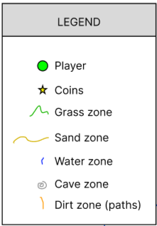
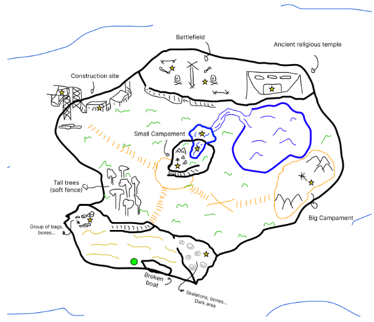
Composition
Each asset, path, sign or building is placed for a reason, to guide the player and, indirectly, walk with them through the level without even noticing. Because of that, I have divided my level into 5 sectors, connected with different techniques and guided by some fencing, funneling, magnetism and objectives.
Sectors & Objectives
My map has 5 different sections: the beach, the little town, the construction site, the central mountain and the ancient temple (which includes a battlefield).
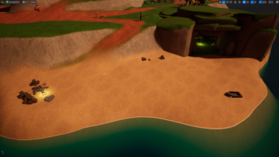
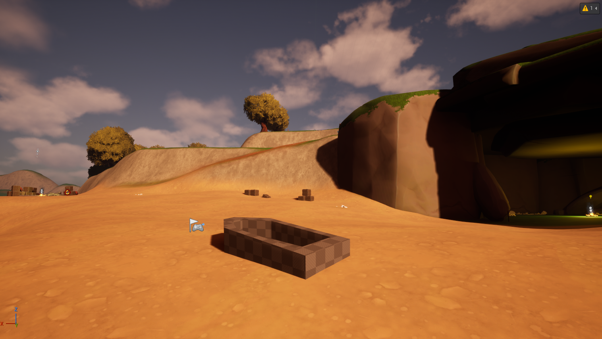
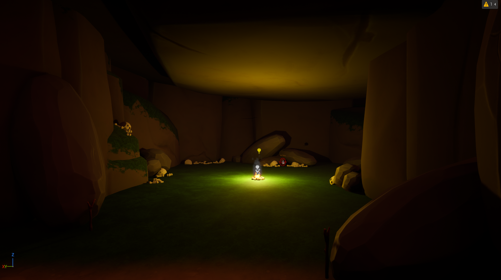
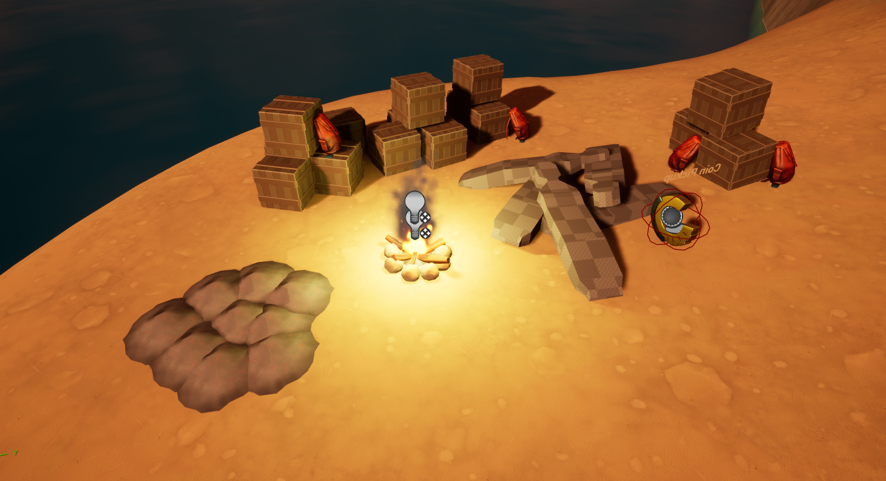
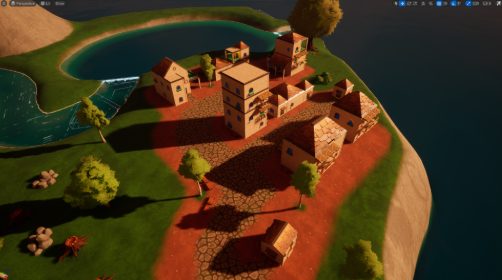
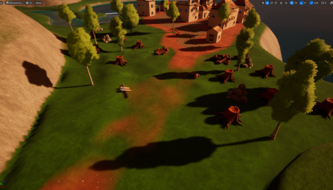
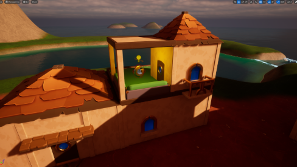
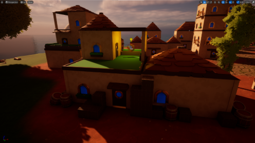
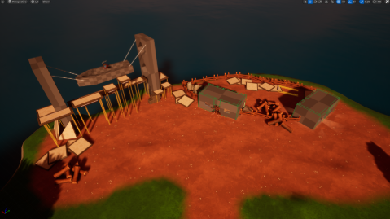
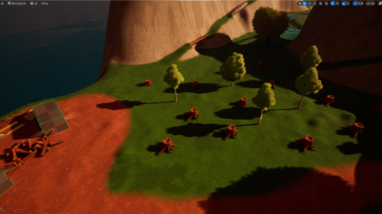
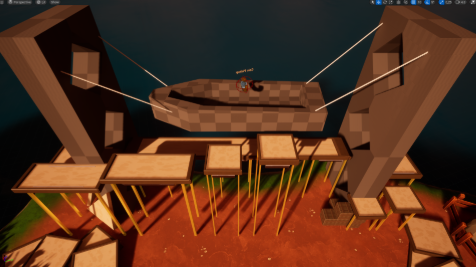
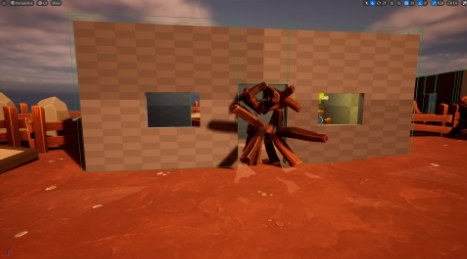
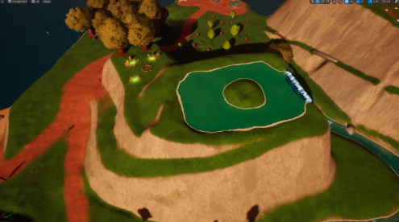
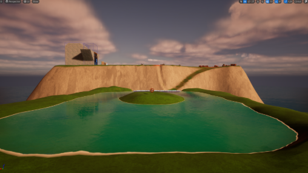
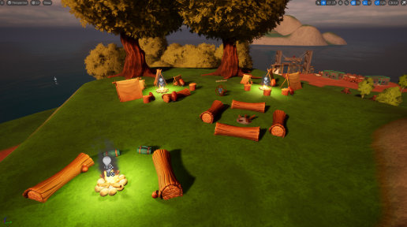
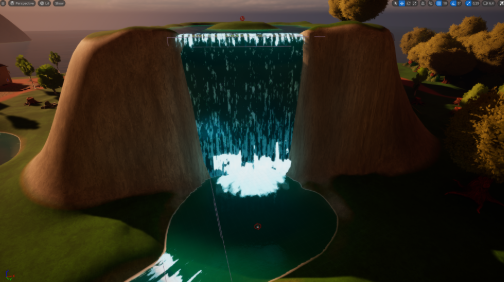
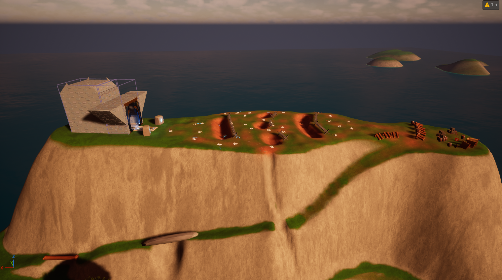
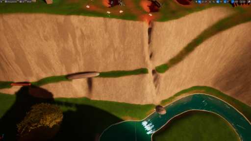
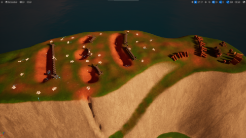
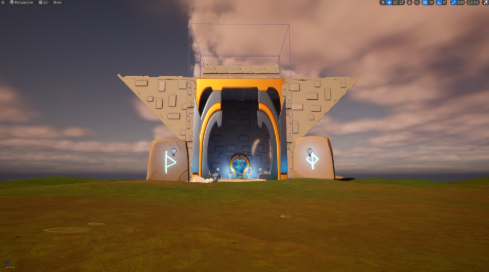
Fencing
I have introduced two types of fencing in my level: soft fencing and challenge fencing:
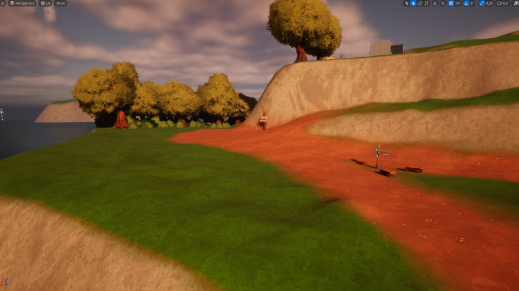
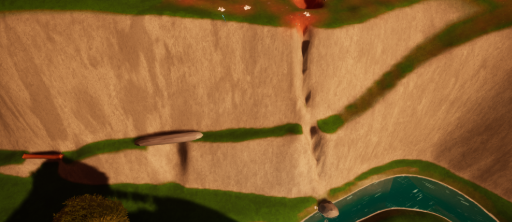
Funneling
I use the funnelings on both mountain’s ascension. On the central mountain, I defined only two ways up, one would lead to the camp (where they can find a coin), and the other lead to the lake (where another coin can be found). With that, I prevent the player from missing those coins. The third funneling is the same ascension where the challenge fencing can be found. With it, I force the player to reach the mountain through the other side of the mountain where the temple is placed, so they would have to walk towards the whole battlefield and see what has happened.
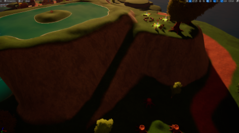
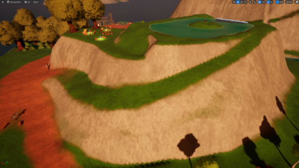
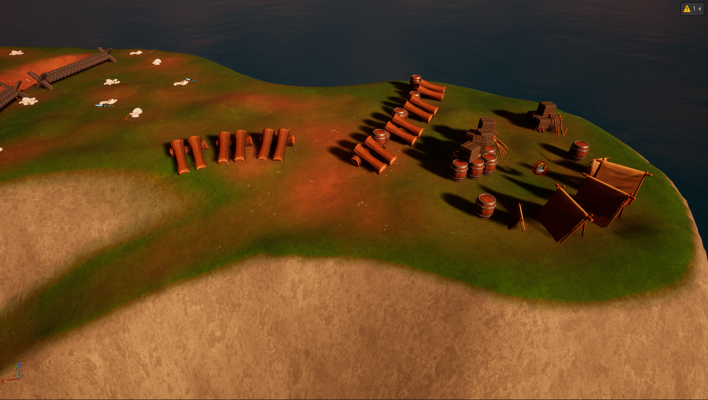
Magnetism
My map has different ways of magnetism. In the spawn, the two forces leading the player are the cave and the mini-campfire situated on the west. When they leave the beach, two forces get the player's attention too: the village (big campament) and the central mountain. Once the player has seen both, starts getting magnetism from the construction site and the last mountain.
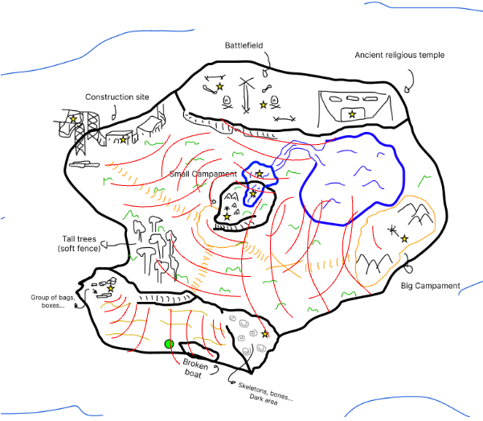
Post-processing
I played with post-processing in my level to accentuate the player’s emotions when playing:
- The first one is located in the cave. When the player enters the light’s temperature gets warmer, producing a sense of danger and darkness.
- The second one is located under the water, with a cold temperature, to simulate the view through it.
- The last one is located in the final temple, with the objective of disrupting the player’s vision towards the god who the villagers used to adore in the island. These would make a good visual representation towards a divine structure.
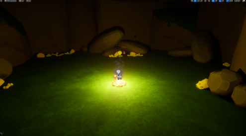
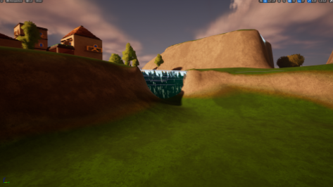
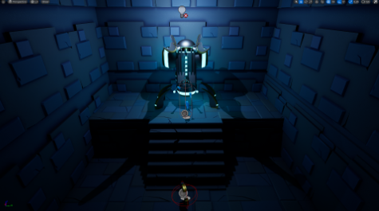
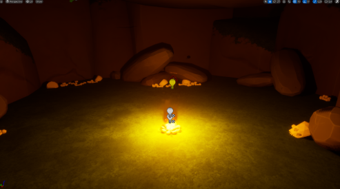
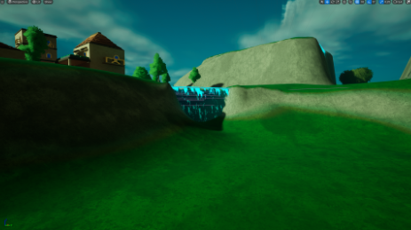
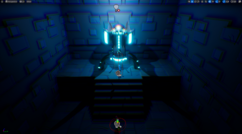
Blockout elements
For the sake of this level design, I had to create some blockout structures that couldn’t be represented with the art pass given from the packages. I have made a total of 8 blockout elements.
- Skeleton: Representation of bones and decomposed corpses. Located in the cave, beach and battlefield.
- Bones: Alongside the skeleton meshes, these would represent decomposed corpses.
- Dead body bag: Same mood as the skeleton and bone meshes, now representing dead bodies inside bags to easy transportation.
- Boat: Basic wooden boat located on the beach and the construction site. Representing the main reason why the player is inside the island and, at the same time, their way out.
- Scaffolding: Located in the construction site, serving as a pillar to the boat’s construction landmark.
- Construction houses: Located in the construction site section, represents a building with two entrances. In one place of the map, one house has the main door locked and the player will have to seek for another entrance.
- Cross: Located in the battlefield, these wooden crosses combine with the barbed wire to make one big blockout mesh.
- Barbed wire: Typical battlefield wires used in the first and second world wars.
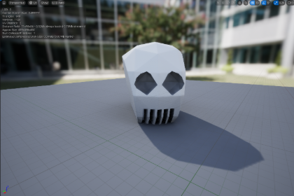
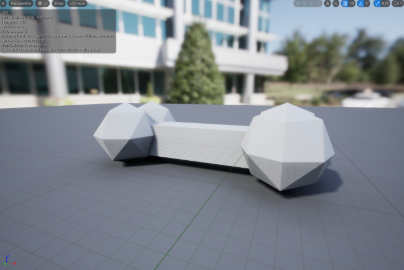
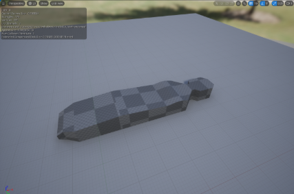
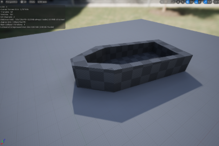
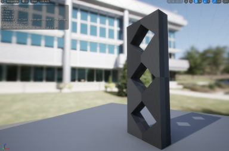
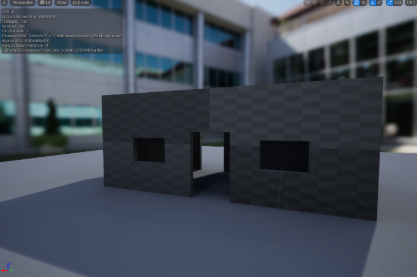
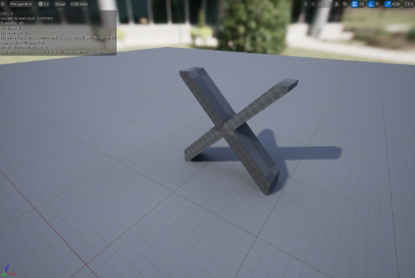
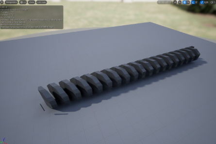
Storytelling
Just like the player, there were others like them that crashed into the island. They discovered an ancient god's temple, what originated two groups: those who became fanatics and those who wanted to leave (heretics). Those who wanted to escape had to do it silently. They started camping outside the village, in the central mountain, to avoid them and start a plan. They looked around and saw a lot of wood, enough to make a boat, so they started building it on the other side of the island. Once the fanatics discovered their plan, continuous fights started and the two groups distanced themselves even more, causing a lot of killings and bringing their corpses to the beach and the cave. One day, tired of too many fights and deaths, the heretics decided to attack the temple and destroy whatever was inside, so they went on top of the hill and prepared their attack, with sticks and stones. What they didn’t know is that the fanatics had some weird advanced swords, so the fight was hard. Even so, they managed to kill all the fanatics and the last heretic alive got the key to the temple to discover what remained there to destroy it. He was too weak, though, and died next to the main door of the temple with the key in his hand. In the end, all ended up dead.
Playtesting and iterations
After the playtesting session, I arranged a series of changes:
- Flat floor: Some told me that some parts of my map, were too flat, and that I would have to give a little more shape to my terrain.
- Limit collisions: When playtesting, some of them falled to the sea from the island and there was no way back. I solved this problem by adding collisions on the limits.
- Skeletons not visible enough: The skeletons in the cave were too dark, and most of the playtesters did not see them. What I did was simply give them a white texture to highlight them more.
Final Level Overview
Overall, this is how my final level looks from a top-down perspective after the rework.
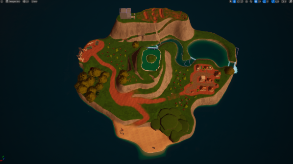